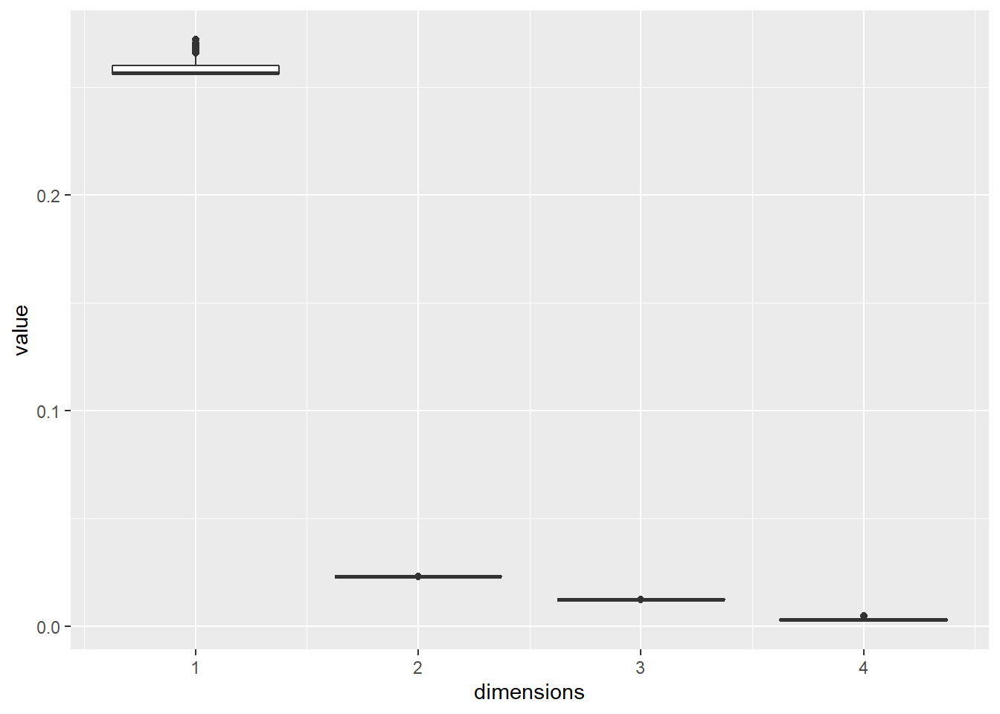
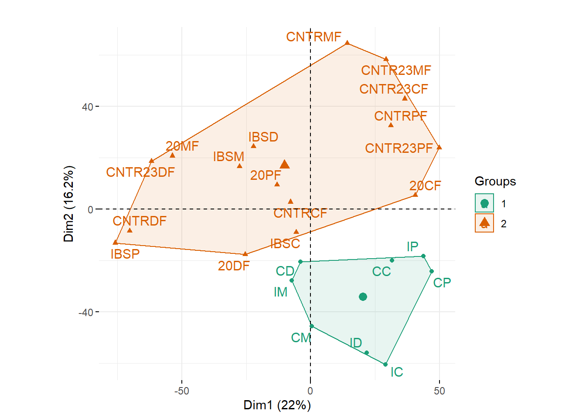
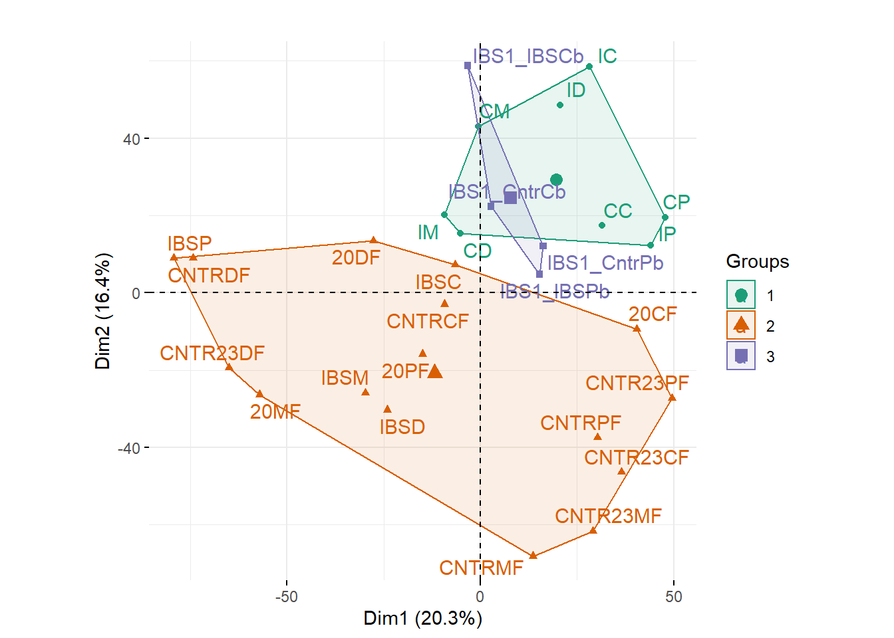
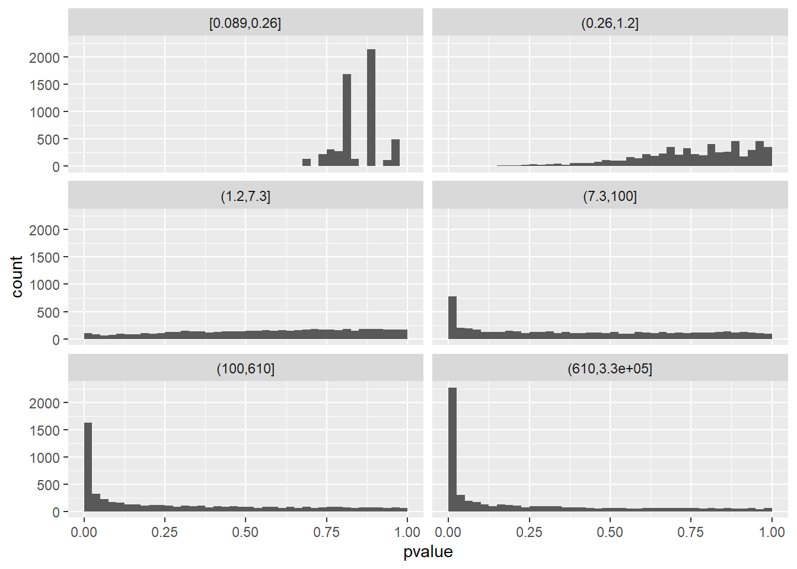

Chapter 8 CAPÍTULO N° 5 - Testeo y Pruebas
8.1 Objetivos de este Capítulo
Familiarizarnos con la maquinaria estadística de la prueba de hipótesis, su vocabulario, su propósito y sus fortalezas y limitaciones.
Comprenda lo que significan las pruebas múltiples.
Vea que las pruebas múltiples no son un problema, sino más bien una oportunidad, ya que supera muchas de las limitaciones de las pruebas individuales.
Comprender la tasa de descubrimiento falso.
Aprenda a hacer diagramas de diagnóstico.
Utilice la ponderación de hipótesis para aumentar el poder de nuestros análisis.
8.2 Librerias
library(pacman)
p_load("tibble","dplyr","ggplot2","gganimate","magick","transformr")
require("transformr")makedata = function(px, f1, f2, pi0, xcut, what) {
stopifnot(length(px)==length(f1),
length(px)==length(f2),
length(pi0)==1,
length(xcut)==1,
length(what)==1,
pi0>=0, pi0<=1)
f1 = f1 * pi0
f2 = f2 * (1-pi0)
i1 = which(px >= xcut)
i2 = seq(1, i1[1], by = 1L)
maxf1 = max(f1)
maxf2 = max(f2)
bind_rows(
tibble(
x = px[c(i1, rev(i1))],
y = c(f1[i1], rep(0, length(i1))),
outcome = "True Negative"),
tibble(
x = px[c(i2, rev(i2))],
y = c(f1[i2], rep(0, length(i2))),
outcome = "False Positive"),
tibble(
x = px[c(i1, rev(i1))],
y = c(f2[i1], rep(0, length(i1))) + maxf1,
outcome = "False Negative"),
tibble(
x = px[c(i2, rev(i2))],
y = c(f2[i2], rep(0, length(i2))) + maxf1,
outcome = "True Positive"),
tibble(
x = rep(xcut, 3L),
y = c(0, maxf1+maxf2, 0),
outcome = ""
)) |>
bind_cols(tibble(xcut = xcut, what = what))
}
findclosest = function(x, x0) {x[which.min(abs(x-x0))]}
pi0 = 2/3
t_df = 4
pxa = seq(-4, 4, length.out = 500)
pxb = pt(pxa, df = t_df)
xcuta = findclosest(pxa, qt(0.05, df = t_df))
xcutb = findclosest(pxb, 0.05)
f1a = dt(pxa, df = t_df)
f2a = dgamma(pxa + 4, shape = 2, rate = 0.8)
chainrulefac = (diff(pxa)/diff(pxb)) |> {\(x) c(x, last(x))}()
f1b = f1a * chainrulefac |> {\(x) x/sum(x)}()
f2b = f2a * chainrulefac |> {\(x) x/sum(x)}()
f1b = f1b/sum(f1b)
f2b = f2b/sum(f2b)
df = bind_rows(
makedata(pxa, f1a, f2a, pi0, xcuta, "x"),
makedata(pxb, f1b, f2b, pi0, xcutb, "p-value")
)
make_static_plot = function(df) {
stopifnot(nrow(df)>=3)
colpal = setNames(
c(RColorBrewer::brewer.pal(12, "Paired")[c(6,5,1,2)], "black"),
c("True Positive", "False Negative",
"False Positive", "True Negative", ""))
ggplot(df, aes(x = x, y = y, fill = outcome, col = outcome)) +
geom_polygon() +
scale_fill_manual(values = colpal) +
scale_colour_manual(values = colpal) +
xlab("value") +
theme(legend.position = "bottom",
legend.title = element_blank(),
axis.title.y = element_blank(),
axis.text.y = element_blank(),
axis.ticks.y = element_blank())
}make_static_plot(dplyr::filter(df, what == "x"))
make_static_plot(dplyr::filter(df, what == "p-value"))
p1 <- make_static_plot(df) +
labs(title = "{closest_state}") +
transition_states(what,
transition_length = 3,
state_length = 1) +
view_follow() +
ease_aes("cubic-in-out")
animate(p1, renderer = magick_renderer(), width = 5.6, height = 3, units = "in", res = 150, device = "png")8.3 Un ejemplo: lanzamiento de una moneda
set.seed(0xdada)
numFlips = 100
probHead = 0.6
coinFlips = sample(c("H", "T"), size = numFlips,
replace = TRUE, prob = c(probHead, 1 - probHead))
head(coinFlips)## [1] "T" "T" "H" "T" "H" "H"table(coinFlips)## coinFlips
## H T
## 59 41Graficamos la Ecuación; en buena medida, también marcamos el valor observado numHeadscon una línea azul vertical.
library("dplyr")
k = 0:numFlips
numHeads = sum(coinFlips == "H")
binomDensity = tibble(k = k,
p = dbinom(k, size = numFlips, prob = 0.5))library("ggplot2")
ggplot(binomDensity) +
geom_bar(aes(x = k, y = p), stat = "identity") +
geom_vline(xintercept = numHeads, col = "blue")
Todavía podemos usar la simulación de Monte Carlo para darnos algo con lo que comparar:
numSimulations = 10000
outcome = replicate(numSimulations, {
coinFlips = sample(c("H", "T"), size = numFlips,
replace = TRUE, prob = c(0.5, 0.5))
sum(coinFlips == "H")
})
ggplot(tibble(outcome)) + xlim(-0.5, 100.5) +
geom_histogram(aes(x = outcome), binwidth = 1, center = 50) +
geom_vline(xintercept = numHeads, col = "blue")
Como era de esperar, el número más probable de caras es 50, es decir, la mitad del número de lanzamientos de monedas. Pero vemos que otros números cercanos a 50 también son bastante probables. ¿Cómo cuantificamos si el valor observado, 59, se encuentra entre los valores que es probable que veamos en una moneda justa, o si su desviación del valor esperado ya es lo suficientemente grande como para que podamos concluir con suficiente confianza que la moneda está sesgada? ? Dividimos el conjunto de todos los k (0 a 100) en dos subconjuntos complementarios, la rechazo y la región de no rechazo.
library("dplyr")
alpha = 0.05
binomDensity = arrange(binomDensity, p) |>
mutate(reject = (cumsum(p) <= alpha))
ggplot(binomDensity) +
geom_bar(aes(x = k, y = p, col = reject), stat = "identity") +
scale_colour_manual(
values = c(`TRUE` = "red", `FALSE` = "darkgrey")) +
geom_vline(xintercept = numHeads, col = "blue") +
theme(legend.position = "none")
Acabamos de pasar por los pasos de una prueba binomial. De hecho, esta es una actividad tan frecuente en R que se ha incluido en una sola función y podemos comparar su salida con nuestros resultados.
binom.test(x = numHeads, n = numFlips, p = 0.5)##
## Exact binomial test
##
## data: numHeads and numFlips
## number of successes = 59, number of trials = 100, p-value = 0.08863
## alternative hypothesis: true probability of success is not equal to 0.5
## 95 percent confidence interval:
## 0.4871442 0.6873800
## sample estimates:
## probability of success
## 0.598.4 Los cinco pasos de la prueba de hipótesis
Diseñe un experimento o estudio adecuado, elija una función de resumen de datos y una estadística de prueba .
Establezca una hipótesis nula , que es un modelo de realidad simple y computacionalmente manejable que le permite calcular la distribución nula , es decir, los posibles resultados de la estadística de prueba y sus probabilidades bajo el supuesto de que la hipótesis nula es verdadera.
Fije la región de rechazo , es decir, un subconjunto de resultados posibles cuya probabilidad total es pequeña.
Haz el experimento y recopila los datos; calcular el estadístico de prueba.
Tomar una decisión: rechazar la hipótesis nula si el estadístico de prueba está en la región de rechazo.
dat <- data.frame(c('**Reject null hypothesis**', '**Do not reject**'),
c('Type I error (false positive)', 'True negative'),
c('True positive', 'Type II error (false negative)'))
knitr::kable(dat, col.names = c('Test vs reality', 'Null hypothesis is true', '$...$ is false'), caption = 'Types of error in a statistical test.')| Test vs reality | Null hypothesis is true | \(...\) is false |
|---|---|---|
| Reject null hypothesis | Type I error (false positive) | True positive |
| Do not reject | True negative | Type II error (false negative) |
.myttest = function(x, y) {
mx = mean(x)
my = mean(y)
s12 = sqrt((sum((x-mx)^2)+sum((y-my)^2)) / (length(x)+length(y)-2))
(mx - my) / s12 * sqrt(length(x)*length(y)/(length(x)+length(y)))
}
replicate(100, {
x = rnorm(ceiling(30 * runif(1)))
y = rnorm(ceiling(30 * runif(1)))
stopifnot(abs(.myttest(x, y) - t.test(x, y, var.equal=TRUE)$statistic) < 1e-9)
})## [[1]]
## NULL
##
## [[2]]
## NULL
##
## [[3]]
## NULL
##
## [[4]]
## NULL
##
## [[5]]
## NULL
##
## [[6]]
## NULL
##
## [[7]]
## NULL
##
## [[8]]
## NULL
##
## [[9]]
## NULL
##
## [[10]]
## NULL
##
## [[11]]
## NULL
##
## [[12]]
## NULL
##
## [[13]]
## NULL
##
## [[14]]
## NULL
##
## [[15]]
## NULL
##
## [[16]]
## NULL
##
## [[17]]
## NULL
##
## [[18]]
## NULL
##
## [[19]]
## NULL
##
## [[20]]
## NULL
##
## [[21]]
## NULL
##
## [[22]]
## NULL
##
## [[23]]
## NULL
##
## [[24]]
## NULL
##
## [[25]]
## NULL
##
## [[26]]
## NULL
##
## [[27]]
## NULL
##
## [[28]]
## NULL
##
## [[29]]
## NULL
##
## [[30]]
## NULL
##
## [[31]]
## NULL
##
## [[32]]
## NULL
##
## [[33]]
## NULL
##
## [[34]]
## NULL
##
## [[35]]
## NULL
##
## [[36]]
## NULL
##
## [[37]]
## NULL
##
## [[38]]
## NULL
##
## [[39]]
## NULL
##
## [[40]]
## NULL
##
## [[41]]
## NULL
##
## [[42]]
## NULL
##
## [[43]]
## NULL
##
## [[44]]
## NULL
##
## [[45]]
## NULL
##
## [[46]]
## NULL
##
## [[47]]
## NULL
##
## [[48]]
## NULL
##
## [[49]]
## NULL
##
## [[50]]
## NULL
##
## [[51]]
## NULL
##
## [[52]]
## NULL
##
## [[53]]
## NULL
##
## [[54]]
## NULL
##
## [[55]]
## NULL
##
## [[56]]
## NULL
##
## [[57]]
## NULL
##
## [[58]]
## NULL
##
## [[59]]
## NULL
##
## [[60]]
## NULL
##
## [[61]]
## NULL
##
## [[62]]
## NULL
##
## [[63]]
## NULL
##
## [[64]]
## NULL
##
## [[65]]
## NULL
##
## [[66]]
## NULL
##
## [[67]]
## NULL
##
## [[68]]
## NULL
##
## [[69]]
## NULL
##
## [[70]]
## NULL
##
## [[71]]
## NULL
##
## [[72]]
## NULL
##
## [[73]]
## NULL
##
## [[74]]
## NULL
##
## [[75]]
## NULL
##
## [[76]]
## NULL
##
## [[77]]
## NULL
##
## [[78]]
## NULL
##
## [[79]]
## NULL
##
## [[80]]
## NULL
##
## [[81]]
## NULL
##
## [[82]]
## NULL
##
## [[83]]
## NULL
##
## [[84]]
## NULL
##
## [[85]]
## NULL
##
## [[86]]
## NULL
##
## [[87]]
## NULL
##
## [[88]]
## NULL
##
## [[89]]
## NULL
##
## [[90]]
## NULL
##
## [[91]]
## NULL
##
## [[92]]
## NULL
##
## [[93]]
## NULL
##
## [[94]]
## NULL
##
## [[95]]
## NULL
##
## [[96]]
## NULL
##
## [[97]]
## NULL
##
## [[98]]
## NULL
##
## [[99]]
## NULL
##
## [[100]]
## NULL8.5 La prueba t
p_load("ggbeeswarm")
data("PlantGrowth")
ggplot(PlantGrowth, aes(y = weight, x = group, col = group)) +
geom_beeswarm() + theme(legend.position = "none")
tt = with(PlantGrowth,
t.test(weight[group =="ctrl"],
weight[group =="trt2"],
var.equal = TRUE))
tt##
## Two Sample t-test
##
## data: weight[group == "ctrl"] and weight[group == "trt2"]
## t = -2.134, df = 18, p-value = 0.04685
## alternative hypothesis: true difference in means is not equal to 0
## 95 percent confidence interval:
## -0.980338117 -0.007661883
## sample estimates:
## mean of x mean of y
## 5.032 5.526Para calcular el valor p, el t.testfunción utiliza la teoría asintótica para la t -estadística; esta teoría establece que bajo la hipótesis nula de igualdad de medias en ambos grupos, el estadístico sigue una distribución matemática conocida, la denominada t -distribución con n 1 + n 2 grados de libertad.
abs_t_null = with(
dplyr::filter(PlantGrowth, group %in% c("ctrl", "trt2")),
replicate(10000,
abs(t.test(weight ~ sample(group))$statistic)))
ggplot(tibble(`|t|` = abs_t_null), aes(x = `|t|`)) +
geom_histogram(binwidth = 0.1, boundary = 0) +
geom_vline(xintercept = abs(tt$statistic), col = "red")
mean(abs(tt$statistic) <= abs_t_null)## [1] 0.0489with(rbind(PlantGrowth, PlantGrowth),
t.test(weight[group == "ctrl"],
weight[group == "trt2"],
var.equal = TRUE))##
## Two Sample t-test
##
## data: weight[group == "ctrl"] and weight[group == "trt2"]
## t = -3.1007, df = 38, p-value = 0.003629
## alternative hypothesis: true difference in means is not equal to 0
## 95 percent confidence interval:
## -0.8165284 -0.1714716
## sample estimates:
## mean of x mean of y
## 5.032 5.5268.6 Pruebas múltiples
dat <- data.frame(c('**Rejected**', '**Not rejected**', '**Total**'),
c('$V$', '$U$', '$m_0$'),
c('$S$', '$T$','$m-m_0$'),
c('$R$', '$m-R$', '$m$'))
knitr::kable(dat, col.names = c('Test vs reality', 'Null hypothesis is true', '$...$ is false', 'Total'), caption = 'Types of error in multiple testing. The letters designate the number of
times each type of error occurs.')| Test vs reality | Null hypothesis is true | \(...\) is false | Total |
|---|---|---|---|
| Rejected | \(V\) | \(S\) | \(R\) |
| Not rejected | \(U\) | \(T\) | \(m-R\) |
| Total | \(m_0\) | \(m-m_0\) | \(m\) |
8.7 La tasa de error inteligente de la familia
1 - (1 - 1/1e6)^8e5## [1] 0.55067128.7.1 Corrección de Bonferroni
Corrección de Bonferroni. La gráfica muestra para m = 10 4 en función de α .
m = 10000
ggplot(tibble(
alpha = seq(0, 7e-6, length.out = 100),
p = 1 - (1 - alpha)^m),
aes(x = alpha, y = p)) + geom_line() +
xlab(expression(alpha)) +
ylab("Prob( no false rejection )") +
geom_hline(yintercept = 0.05, col = "red")
8.8 La tasa de descubrimiento falso
p_load("DESeq2","airway")
data("airway")
aw = DESeqDataSet(se = airway, design = ~ cell + dex)
aw = DESeq(aw)
awde = as.data.frame(results(aw)) |> dplyr::filter(!is.na(pvalue))8.8.1 El histograma del valor p
ggplot(awde, aes(x = pvalue)) +
geom_histogram(binwidth = 0.025, boundary = 0)
Estimación visual de la FDR con el histograma de valor p.
alpha = binw = 0.025
pi0 = 2 * mean(awde$pvalue > 0.5)
ggplot(awde,
aes(x = pvalue)) + geom_histogram(binwidth = binw, boundary = 0) +
geom_hline(yintercept = pi0 * binw * nrow(awde), col = "blue") +
geom_vline(xintercept = alpha, col = "red")
emos que hay 4772 valores p en el primer contenedor.
pi0 * alpha / mean(awde$pvalue <= alpha)## [1] 0.19800928.8.2 El algoritmo de Benjamini-Hochberg para controlar el FDR
phi = 0.10
awde = mutate(awde, rank = rank(pvalue))
m = nrow(awde)
ggplot(dplyr::filter(awde, rank <= 7000), aes(x = rank, y = pvalue)) +
geom_line() + geom_abline(slope = phi / m, col = "red")
kmax = with(arrange(awde, rank),
last(which(pvalue <= phi * rank / m)))
kmax## [1] 4099El método encuentra el punto más a la derecha donde las líneas negra (nuestros valores p).
8.9 El FDR local
awdef = awde %>%
dplyr::filter(baseMean >=1) %>%
arrange(pvalue) %>%
mutate(oneminusp = 1 - pvalue,
N = n() - row_number())
jj = round(nrow(awdef) * c(1, 0.5))
slope = with(awdef, diff(N[jj]) / diff(oneminusp[jj]))
ggplot(awdef) +
geom_point(aes(x = oneminusp, y = N), size = 0.15) +
xlab(expression(1-p[i])) +
ylab(expression(N(p[i]))) +
geom_abline(intercept = 0, slope = slope, col = "red3") +
geom_hline(yintercept = slope, linetype = "dotted") +
geom_vline(xintercept = 1, linetype = "dotted") +
geom_text(x = 0, y = slope, label = paste(round(slope)),
hjust = -0.1, vjust = -0.25) 
pi0 = 0.6
f1 = function(t, shape2 = 7) {
rv = dbeta(t, 1, shape2)
rv / sum(rv) * (length(rv)-1) * (1-pi0)
}
t = seq(0, 1, length.out = 101)
t0 = 0.1
f0 = rep(pi0, length(t))
f = f0 + f1(t)
F0 = cumsum(f0) / (length(t)-1)
F = cumsum(f) / (length(t)-1)
stopifnot(abs(F[length(F)] - 1) < 1e-2)
myplot = function(y, y0, ylim, yat, havepi0, colo = RColorBrewer::brewer.pal(12, "Paired")) {
plot(x = t, y = y, type = "l", xlim = c(0, 1), ylim = ylim,
xaxs = "i", yaxs = "i", ylab = "", yaxt = "n", xaxt = "n", xlab = "", main = deparse(substitute(y)))
axis(side = 1, at = c(0, 1))
axis(side = 2, at = yat)
xa = t[t<=t0]
xb = t[t>=t0]
y0a = y0[t<=t0]
y0b = y0[t>=t0]
ya = y[t<=t0]
polygon(x = c(xa, rev(xa)), y = c(y[t<=t0], rev(y0a)), col = colo[2])
polygon(x = c(xb, rev(xb)), y = c(y[t>=t0], rev(y0b)), col = colo[1])
polygon(x = c(xa, rev(xa)), y = c(rep(0, length(xa)), rev(y0a)), col = "#c0c0c0")
polygon(x = c(xb, rev(xb)), y = c(rep(0, length(xb)), rev(y0b)), col = "#f0f0f0")
segments(x0 = rep(t0, 2), x1 = rep(t0, 2), y0 = c(0, last(y0a)), y1 = c(last(y0a), last(ya)),
col = colo[5:6], lwd = 3)
text(t0, 0, adj = c(0, 1.8), labels = expression(p), cex = 1, xpd = NA)
if (havepi0)
text(0, pi0, adj = c(1.5, 0.5), labels = expression(pi[0]), cex = 1, xpd = NA)
}
par(mai = c(1, 0.6, 0.4, 0.3), mfcol = c(2,1))
myplot(f, f0, ylim = c(0, f[1]), yat = c(0:3), havepi0 = TRUE)
myplot(F, F0, ylim = c(0, 1), yat = c(0, 0.5, 1), havepi0 = FALSE)
Los paquetes qvalue y fdrtool ofrecen facilidades para ajustar estos modelos a los datos.
p_load("fdrtool")
ft = fdrtool(awde$pvalue, statistic = "pvalue")## Step 1... determine cutoff point
## Step 2... estimate parameters of null distribution and eta0
## Step 3... compute p-values and estimate empirical PDF/CDF
## Step 4... compute q-values and local fdr
## Step 5... prepare for plotting
ft$param[,"eta0"]## eta0
## 0.88229228.10 Filtrado independiente y ponderación de hipótesis
awde$baseMean[1]## [1] 708.6022cts = counts(aw, normalized = TRUE)[1, ]
cts## SRR1039508 SRR1039509 SRR1039512 SRR1039513 SRR1039516 SRR1039517 SRR1039520
## 663.3142 499.9070 740.1528 608.9063 966.3137 748.3722 836.2487
## SRR1039521
## 605.6024mean(cts)## [1] 708.6022stopifnot(abs(mean(cts)-awde$baseMean[1])<1e-9)ggplot(awde, aes(x = asinh(baseMean))) +
geom_histogram(bins = 60)
ggplot(awde, aes(x = rank(baseMean), y = -log10(pvalue))) +
geom_hex(bins = 60) +
theme(legend.position = "none")
8.10.1 Pregunta
En el diagrama de dispersión, ¿por qué usamos − log 10 para los valores de p? ¿Por qué la transformación de rango para el baseMean?
awde = mutate(awde, stratum = cut(baseMean, include.lowest = TRUE,
breaks = signif(quantile(baseMean,probs=seq(0,1,length.out=7)),2)))ggplot(awde, aes(x = pvalue)) + facet_wrap( ~ stratum, nrow = 4) +
geom_histogram(binwidth = 0.025, boundary = 0)
ggplot(awde, aes(x = pvalue, col = stratum)) +
stat_ecdf(geom = "step") + theme(legend.position = "bottom")
¿Podemos usar eso para una mejor corrección de pruebas múltiples? Resulta que esto es posible. Podemos utilizar filtrado independiente (Bourgon, Gentleman y Huber 2010 ) o ponderación de hipótesis independiente (IHW) (Ignatiadis et al. 2016 ).
library(pacman)
p_load("IHW")
ihw_res = ihw(awde$pvalue, awde$baseMean, alpha = 0.1)
rejections(ihw_res)## [1] 4892Comparemos esto con lo que obtenemos del método ordinario (no ponderado) de Benjamini-Hochberg:
padj_BH = p.adjust(awde$pvalue, method = "BH")
sum(padj_BH < 0.1)## [1] 4099Pesos de hipótesis determinados por el ihwfunción. Aquí, la configuración predeterminada de la función eligió 22 estratos, mientras que en nuestra exploración manual anterior.
plot(ihw_res)